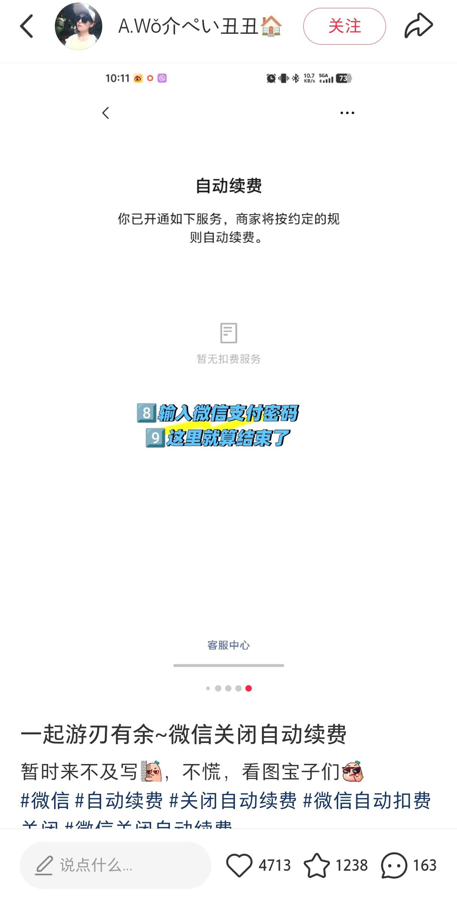
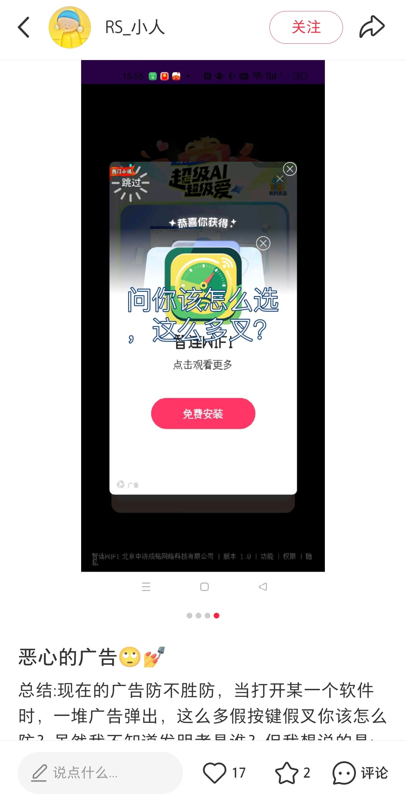

识别诱饵关闭按钮（假 X），高亮真"跳过"入口。假按钮置灰 20% + 诱饵标签，真按钮亮蓝放大 + AI 推荐标记。
净化虚假倒计时和"仅剩名额"高压文案。文字变灰、不透明度降至 50%，右上角浮现产品认证徽章。
挽留弹窗整体模糊 + 不透明度降至 20%。真实退订按钮投映蓝色呼吸光晕，逐步引导用户完成取消。
真假跳过按钮并存，悬浮盾从右侧滑出
假按钮置灰 + 诱饵标签，真按钮高亮
虚假倒计时 + 名额压迫 + 默认自动续费
倒计时变灰 50%，浮现认证徽章
挽留弹窗 + 逐步退订路径引导
蓝色呼吸光晕指引，成功取消自动续费
iPhone 15 高保真容器（灵动岛 + 刘海屏），毛玻璃质感抽屉，300ms 平滑过渡动画。
右边缘滑出半身 → 点击展开抽屉 → 1s 打字机扫描动效 → 一键净化 / 开始引导。
温和亮蓝 #1e90ff = 安全路径；安全嫩绿 #2ecc71 = 成功；中性暗灰 #7f8c8d = 弱化置灰。摒弃红色警示。
不代用户操作，用呼吸光晕、背景置灰、箭头气泡等视觉暗示，温和引导用户自主完成任务。
Simulation State：管理演示场景切换（AD → HOME → VIP → UNSUB）、悬浮盾状态（HIDDEN / ALERTING / PURIFIED）、用户操作标记。
Custom Event Broker：模拟浏览器插件 Content Script 与 Popup 间通信，REQUEST_DOM_ANALYSIS → RECEIVE_PURIFY_DIRECTIVES 指令集传输。
CSS Injection / Purify Directives：对 DOM 元素注入 classList 变换 —— 不透明度降低、颜色置灰、呼吸光晕动画。
用 AI + CSS Injection 对抗黑暗模式，不修改远端服务器，仅在用户本地浏览器完成视觉净化。
摒弃红色警示与霓虹配色，采用淡蓝呼吸光晕、柔和置灰，提供"支架式引导"而非粗暴替用户操作。
本项目的法理基础与 AdBlock / Dark Mode 完全等同 —— 用户对本地屏幕内容拥有绝对支配权。